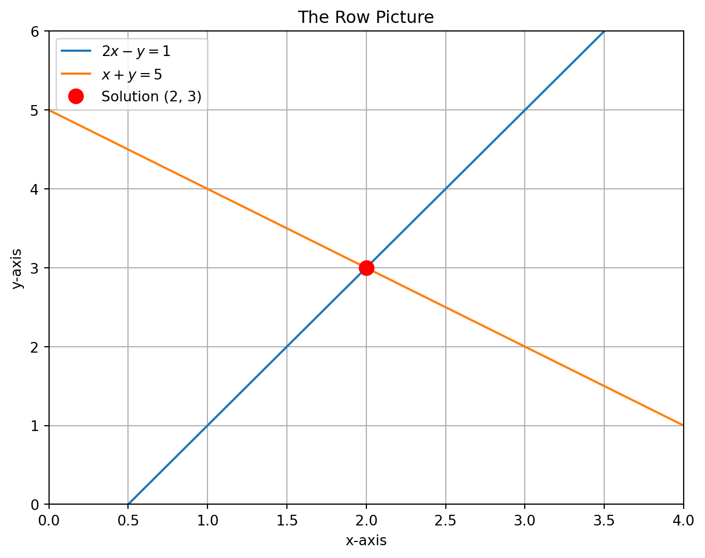
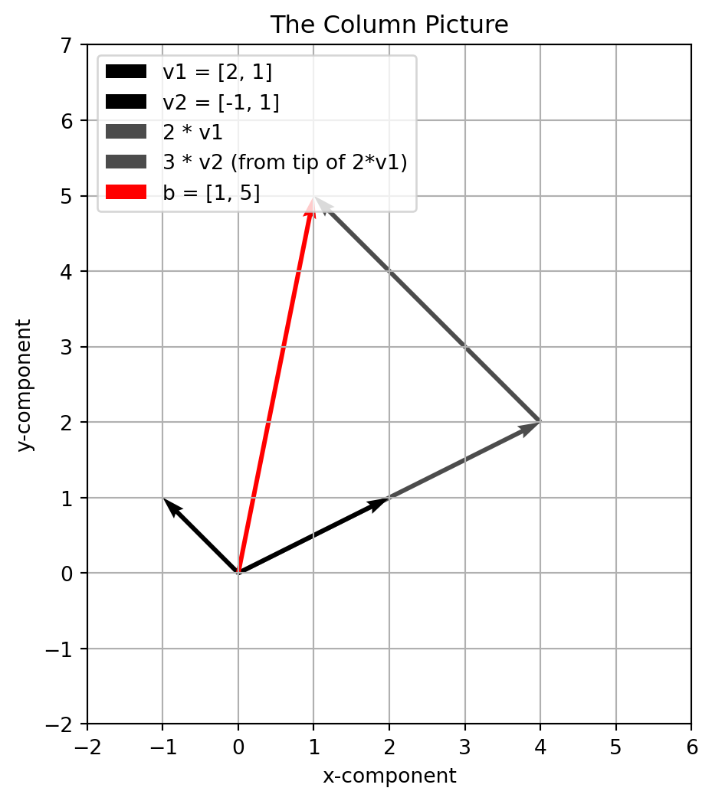
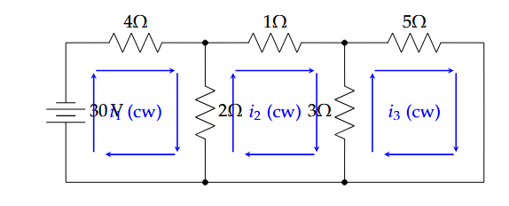
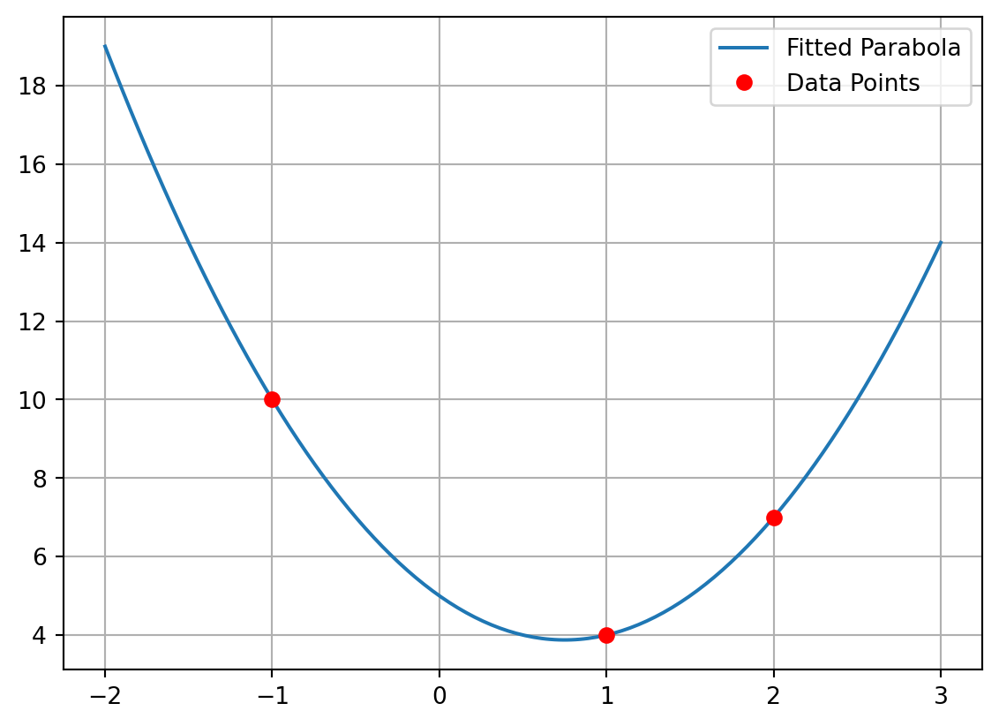

2Module-1: Linear Systems, Properties, and its Solution
Syllabus: System of linear equations - Solution by Gauss elimination - Row Echelon form and Rank of a matrix - Fundamental theorem for linear systems of homogeneous and nonhomogeneous (statement only) - Homogeneous linear system - Non-homogeneous linear system
3 Introduction
Welcome! We’re about to begin a journey into one of the most useful and beautiful subjects in mathematics. But we’re not going to start with abstract definitions. We’re going to start with a concrete problem that you’ve seen before, but we’ll look at it in a new way. The entire field of linear algebra grew from the simple need to solve systems of linear equations.
Let’s consider a simple system:
\[
\begin{align*}
2x - y &= 1 \\
x + y &= 5
\end{align*}
\]
How do we think about this? There are two fundamental viewpoints, and seeing them both is the key to understanding linear algebra.
3.1 The Row Picture: Intersecting Lines
The first way, and the one you’re probably most familiar with, is the Row Picture. Each equation represents a line on the \(xy\)-plane. The solution to the system is the single point where these two lines intersect.
Let’s use Python to see this. We’re not just finding the answer; we’re visualizing the problem.
Code
import numpy as npimport matplotlib.pyplot as plt# Define the matrix A and vector b for the system Ax = bA = np.array([ [2, -1], [1, 1]])b = np.array([1, 5]) # Corrected# Solve Ax = bsolution = np.linalg.solve(A, b)x_sol, y_sol = solution # unpack for plotting# For plotting the linesx_vals = np.linspace(0, 4, 100)# From 2x - y = 1 => y = 2x - 1y1_vals =2* x_vals -1# From x + y = 5 => y = -x + 5y2_vals =-x_vals +5# --- Matplotlib Plotting ---plt.figure(figsize=(8, 6))ax = plt.gca()# Plot the two linesax.plot(x_vals, y1_vals, label='$2x - y = 1$')ax.plot(x_vals, y2_vals, label='$x + y = 5$')# Plot the solution pointax.plot(x_sol, y_sol, 'ro', markersize=10, label=f'Solution ({x_sol:.0f}, {y_sol:.0f})')# Titles and labelsax.set_title("The Row Picture")ax.set_xlabel("x-axis")ax.set_ylabel("y-axis")# Grid, legend, limitsax.grid(True)ax.legend()ax.set_xlim(0, 4)ax.set_ylim(0, 6)# Show plotplt.show()

Figure 3.1: The Row Picture (Matplotlib): The solution \((2, 3)\) is the intersection of two lines.
The plot clearly shows that the two lines meet at the point \((2, 3)\). That’s our solution. For a \(3 \times 3\) system, the row picture would be three planes intersecting at a single point. For anything larger, we can’t draw it, but the idea is the same! This is why we need a more systematic approach.
3.2 The Column Picture: Combining Vectors
Now for the second way, which is completely different and incredibly powerful. This is the Column Picture. We rewrite the system in a vector form:
The question now becomes: how much of the first “column vector” \(\begin{bmatrix} 2 \\ 1\end{bmatrix}\) do we need to add to how much of the second “column vector” \(\begin{bmatrix} -1 \\ 1\end{bmatrix}\) to get the target vector \(\begin{bmatrix} 1 \\ 5\end{bmatrix}\)?
We are trying to find the correct linear combination of the column vectors.
Let’s see what this looks like. We need to find the numbers \(x\) and \(y\) that let us “reach” the target vector \(b\). From the row picture, we already know the answer is \(x=2\) and \(y=3\). Let’s verify this with the vectors.
Code
import numpy as npimport matplotlib.pyplot as plt# Define the vectorsv1 = np.array([2, 1])v2 = np.array([-1, 1])b = np.array([1, 5])# The solution coefficientsx, y =2, 3# Prepare the figureplt.figure(figsize=(6, 6))ax = plt.gca()# Draw base vectors from originax.quiver(0, 0, v1[0], v1[1], angles='xy', scale_units='xy', scale=1, label='v1 = [2, 1]')ax.quiver(0, 0, v2[0], v2[1], angles='xy', scale_units='xy', scale=1, label='v2 = [-1, 1]')# Draw scaled v1 (2 * v1) from originscaled_v1 = x * v1ax.quiver(0, 0, scaled_v1[0], scaled_v1[1], angles='xy', scale_units='xy', scale=1, alpha=0.7, label='2 * v1')# Draw scaled v2 (3 * v2) starting from the tip of 2*v1scaled_v2 = y * v2ax.quiver(scaled_v1[0], scaled_v1[1], scaled_v2[0], scaled_v2[1], angles='xy', scale_units='xy', scale=1, alpha=0.7, label='3 * v2 (from tip of 2*v1)')# Draw the target vector b from originax.quiver(0, 0, b[0], b[1], angles='xy', scale_units='xy', scale=1, color='red', label='b = [1, 5]')# Cosmetic adjustmentsax.set_xlim(-2, 6)ax.set_ylim(-2, 7)ax.set_xlabel("x-component")ax.set_ylabel("y-component")ax.set_aspect('equal', adjustable='box') # preserve vector directions/lengthsax.grid(True)ax.legend(loc='upper left')plt.title("The Column Picture")plt.show()

Figure 3.2: The Column Picture: 2v1 + 3v2 = b, with v1=[2,1], v2=[-1,1], b=[1,5].
This picture shows that if you walk along the blue vector twice, and then walk along the green vector three times, you land exactly on the red target vector. We have found the right combination!
3.3 The Algorithm: Gauss Elimination
Drawing pictures is great for intuition, but it’s not a practical way to solve a \(10 \times 10\) system. We need a rock-solid algorithm. That algorithm is Gauss Elimination. The goal is simple: turn a complicated system into a simple one that is easy to solve.
We do this by creating an Augmented Matrix. It’s just a way to hold all the numbers of our system without writing the variables over and over.
For the system: \[
\begin{align*}
x + 2y + z &= 2 \\
3x + 8y + z &= 12 \\
4y + z &= 2
\end{align*}
\]
There are only three operations we are allowed to do. These operations don’t change the final solution: 1. Swap two rows. 2. Multiply a row by a non-zero constant. 3. Add a multiple of one row to another row. (\(R_i \leftarrow R_i + cR_j\))
Our goal is to use these rules to create zeros below the main diagonal. This turns the matrix into Row Echelon Form.
3.3.1 A Full Example: Solving a 3x3 System
Let’s solve the system above using Python’s symbolic math library, SymPy. This is great for teaching because it can show us the exact steps and avoid messy decimals.
Look at that final matrix! We have an upper-triangular form. This is Row Echelon Form. The first non-zero entries in each row are called pivots. Here our pivots are 1, 2, and 5.
The system has now become: \[
\begin{align*}
x + 2y + z &= 2 \\
2y - 2z &= 6 \\
5z &= -10
\end{align*}
\]
This is easy to solve by back substitution. From the last row: \(5z = -10 \implies z = -2\). Substitute into the second row: \(2y - 2(-2) = 6 \implies 2y + 4 = 6 \implies y = 1\). Substitute both into the first row: \(x + 2(1) + (-2) = 2 \implies x = 2\).
So the solution is \((x, y, z) = (2, 1, -2)\).
Of course, we can have a computer do this all at once. The rref() method will take it all the way to Reduced Row Echelon Form, where the pivots are 1 and there are zeros above them as well.
The RREF form directly tells us the solution: \(1x = 2\), \(1y = 1\), \(1z = -2\).
In this method the unknowns are eliminated successively and the system is reduced to an upper triangular system from which the unknowns can be found by back substitution.
Problem 1: Using Gauss elimination method, solve the system \[\begin{align*}
4x-6y &=-11\\
-3x+8y &=10
\end{align*}\]
Solution: The given system is \(AX=b\) where \(A=\begin{bmatrix}
4 &-6\\
-3 &8
\end{bmatrix}\), \(X=\begin{bmatrix}
x\\
y
\end{bmatrix}\), \(b=\begin{bmatrix}
-11\\
10
\end{bmatrix}\)\[\begin{align*}
[A|b]&=\begin{bmatrix}
4 &-6 &\bigm| &-11\\
-3 &8 &\bigm| &10
\end{bmatrix}\\
&\sim \begin{bmatrix}
4 &-6 &\bigm| &-11\\
0 &\frac{7}{2} &\bigm| &\frac{7}{4}
\end{bmatrix}\begin{array}{c}
R_2\rightarrow R_2+\dfrac{3}{4}R_1
\end{array}
\end{align*}\] The system is reduced to \[\begin{bmatrix}
4 &-6\\
0 &\frac{7}{2}
\end{bmatrix}\begin{bmatrix}
x\\
y
\end{bmatrix}=\begin{bmatrix}
-11\\
\frac{7}{4}
\end{bmatrix}\]\[\begin{align*}
4x-6y &=-11......(1)\\
\frac{7}{2}y &=\frac{7}{4}.....(2)
\end{align*}\]
\((2)\rightarrow y=\frac{1}{2}\) and substituting in (1) we get \(x=-2\). \(\therefore\) the solution is \[x=-2,y=\frac{1}{2}\]
Problem 2: Using Gauss elimination method, find the solution of \[\begin{align*}
x-y &=-3\\
-2x+2y &=6
\end{align*}\]
Solution: The given system is \(AX=B\) where \(A=\begin{bmatrix}
1 &-1\\
-2 &2
\end{bmatrix}\), \(X=\begin{bmatrix}
x\\
y
\end{bmatrix}\), \(b=\begin{bmatrix}
-3\\
6
\end{bmatrix}\)\[\begin{align*}
[A|b]&=\begin{bmatrix}
1 &-1 &\bigm| &-3\\
-2 &2 &\bigm| &6
\end{bmatrix}\\
&\sim \begin{bmatrix}
1 &-1 &\bigm| &-3\\
0 &0 &\bigm| &0
\end{bmatrix}\begin{array}{c}
R_2\rightarrow R_2+2R_1
\end{array}
\end{align*}\] The system is reduced to \[\begin{bmatrix}
1 &-1\\
0 &0
\end{bmatrix}\begin{bmatrix}
x\\
y
\end{bmatrix}=\begin{bmatrix}
-3\\
0
\end{bmatrix}\]\[\begin{align*}
x-y &=-3.....(1)\\
0 &=0.....(2)
\end{align*}\]
In (1) put \(y=t\) then \(x=-3+t\). \(\therefore\) the solution is \[x=t-3,y=t\]
Problem 3: Using Gauss elimination method, find the solution of
Solution: The given system is \(AX=b\) where \(A=\begin{bmatrix}
-1 &-1\\
-3 &-3
\end{bmatrix}\), \(X=\begin{bmatrix}
x\\
y
\end{bmatrix}\), \(b=\begin{bmatrix}
1\\
2
\end{bmatrix}\)\[\begin{align*}
[A|b]&=\begin{bmatrix}
-1 &-1 &\bigm| &1\\
-3 &-3 &\bigm| &2
\end{bmatrix}\\
&\sim \begin{bmatrix}
-1 &-1 &\bigm| &1\\
0 &0 &\bigm| &-1
\end{bmatrix}\begin{array}{c}
R_2\rightarrow R_2-3R_1
\end{array}
\end{align*}\] The system is reduced to \[\begin{bmatrix}
-1 &-1\\
0 &0
\end{bmatrix}\begin{bmatrix}
x\\
y
\end{bmatrix}=\begin{bmatrix}
1\\
-1
\end{bmatrix}\]\[\begin{align*}
-x-y &=1.....(1)\\
0 &=-1.....(2)
\end{align*}\] The false statement \(0=-1\) shows that the system has no solution.
Problem 4: Solve the linear system \[\begin{align*}
x_1-x_2+x_3 &=0\\
-x_1+x_2-x_3 &=0\\
10x_2+25x_3 &= 90\\
20x_1+10x_2 &= 80
\end{align*}\]
The false statement \(0=12\) shows that the system has no solution.
Problem 7: Using Gauss elimination method, find the solution of the system of equation \[\begin{align*}
x+2y+z &=3\\
2x+3y+2z&=5\\
3x-5y+5z &= 2\\
3x+9y-z &=4
\end{align*}\]
Solution: The given system is \(AX=B\) where \(A=\begin{bmatrix}
1 &2 &1\\
2 &3 &2\\
3 &-5 &5\\
3 &9 &-1
\end{bmatrix}\), \(X=\begin{bmatrix}
x\\
y\\
z
\end{bmatrix}\), \(b=\begin{bmatrix}
3\\
5\\
2\\
4
\end{bmatrix}\)\[\begin{align*}
[A|b]&=\begin{bmatrix}
1 &2 &1 &\bigm| &3\\
2 &3 &2 &\bigm| &5\\
3 &-5 &5 &\bigm| &2\\
3 &9 &-1 &\bigm| &4
\end{bmatrix}\\
&\sim \begin{bmatrix}
1 &2 &1 &\bigm| &3\\
0 &-1 &0 &\bigm| &-1\\
0 &-11 &2 &\bigm| &-7\\
0 &3 &-4 &\bigm| &-5
\end{bmatrix}\begin{array}{c}
R_2\rightarrow R_2-2R_1\\
R_3\rightarrow R_3-3R_1\\
R_4\rightarrow R_4-3R_1
\end{array}\\
&\sim \begin{bmatrix}
1 &2 &1 &\bigm| &3\\
0 &-1 &0 &\bigm| &-1\\
0 &0 &2 &\bigm| &4\\
0 &0 &-4 &\bigm| &-8
\end{bmatrix}\begin{array}{c}
R_3\rightarrow R_3-11R_2\\
R_4\rightarrow R_4+3R_2
\end{array}\\
&\sim \begin{bmatrix}
1 &2 &1 &\bigm| &3\\
0 &-1 &0 &\bigm| &-1\\
0 &0 &2 &\bigm| &4\\
0 &0 &0 &\bigm| &0
\end{bmatrix}\begin{array}{c}
R_4\rightarrow R4+2R_3
\end{array}
\end{align*}\] The system is reduced to \[\begin{bmatrix}
1 &2 &1\\
0 &-1 &0\\
0 &0 &2\\
0 &0 &0
\end{bmatrix}\begin{bmatrix}
x\\
y\\
z
\end{bmatrix}=\begin{bmatrix}
3\\
-1\\
4\\
0
\end{bmatrix}\]\[\begin{align*}
x+2y+z &=3.....(1)\\
-y+0z &=-1.....(2)\\
2z &=4 .........(3)\\
0 &=0........(4)
\end{align*}\]\((3)\rightarrow z=2\) and substituting in (2), we get \(y=1\)\ Also substituting \(y\) and \(z\) in (1), we get \(x=-1\). \(\therefore\) the solution is \(x=-1, y=1, z=2\).
3.3.2 Row Echelon Form
At the end of the Gauss elimination the form of the coefficient matrix, the augmented matrix and the system itself are called row echelon form. In it, rows of zeros, if present, are the last rows and the number of zeros before the leading nonzero element in each row is greater than the corresponding number of zeros of the preceeding rows.
3.4 Solve the following using Gauss Elimination method.
3.4.1 Question 1
Solve the system: \[
\begin{cases}
2x + y - z = 8 \\
-3x - y + 2z = -11 \\
-2x + y + 2z = -3
\end{cases}
\]
From the last row: \(z = -1\). Substituting back: - From \(R_2\): \(0.5y + 0.5(-1) = 1 \implies y = 3\) - From \(R_1\): \(2x + 3 - (-1) = 8 \implies x = 2\)
Final solution: \(\boxed{x=2, y=3, z=-1}\).
3.4.2 Question 2
Solve: \[
\begin{cases}
x + 2y + 3z = 14 \\
2x + y + z = 10 \\
3x + 4y + 7z = 30
\end{cases}
\]
From \(R_3\): \(z = 2\).
From \(R_2\): \(y + 2 = 4 \implies y = 2\).
From \(R_1\): \(2x + 8 - 4 = 2 \implies x = -1\).
Solution: \(\boxed{x=-1, y=2, z=2}\).
3.5 Tutorial questions
3.5.1 Problem 1: Circuit Analysis (Electronics Core)
Scenario:
You are given a simple DC circuit with three loops. Using Kirchhoff’s Voltage Law (KVL), which states that the sum of voltages around any closed loop must be zero, we can set up a system of equations to find the unknown loop currents \(i_1, i_2,\) and \(i_3\).

Figure 3.3: Circuit
Loop 1: The 30V source minus the voltage drops across the 4Ω and 2Ω resistors gives the equation: \(30 - 4i_1 - 2(i_1 - i_2) = 0\)
Loop 2: The voltage drops across the 2Ω, 1Ω, and 3Ω resistors give: \(-2(i_2 - i_1) - 1i_2 - 3(i_2 - i_3) = 0\)
Loop 3: The voltage drops across the 3Ω and 5Ω resistors give: \(-3(i_3 - i_2) - 5i_3 = 0\)
Find the values of the three loop currents: \(i_1, i_2,\) and \(i_3\).
Solution:
Mathematical Setup
First, simplify the equations and align the variables:
3.5.2 Problem 2: Polynomial Curve Fitting (Computer Graphics)
Scenario: You are a game developer designing a smooth path for a character. You want a parabola of the form \(y = ax^2 + bx + c\) to pass through three specific points: \(P_1(-1, 10)\), \(P_2(1, 4)\), and \(P_3(2, 7)\). Find the coefficients \(a, b,\) and \(c\) that define this unique parabola.
Solution
Step 1: Mathematical Setup
Each point must satisfy the equation \(y = ax^2 + bx + c\). Plugging in the coordinates gives us three linear equations for the unknowns \(a, b, c\).
For \(P_1(-1, 10)\): \(a(-1)^2 + b(-1) + c = 10 \implies a - b + c = 10\)
For \(P_2(1, 4)\): \(a(1)^2 + b(1) + c = 4 \implies a + b + c = 4\)
For \(P_3(2, 7)\): \(a(2)^2 + b(2) + c = 7 \implies 4a + 2b + c = 7\)
\(a - b + c = 10 \implies a - (-3) + 5 = 10 \implies a = 2\)
The parabola is \(y = 2x^2 - 3x + 5\).
Python Verification
Code
import numpy as npimport matplotlib.pyplot as plt# Matrix for system (x^2, x, 1) at points x = -1, 1, 2A = np.array([ [(-1)**2, -1, 1], # point (-1, 10) [(1)**2, 1, 1], # point (1, 4) [(2)**2, 2, 1] # point (2, 7)])# Corresponding y-valuesb = np.array([10, 4, 7])# Solve for coefficients a, b, ccoeffs = np.linalg.solve(A, b)a, b_c, c = coeffsprint(f"The coefficients are a={a:.1f}, b={b_c:.1f}, c={c:.1f}")print(f"The parabola is y = {a:.1f}x² + {b_c:.1f}x + {c:.1f}")# Plottingx_vals = np.linspace(-2, 3, 200)y_vals = a * x_vals**2+ b_c * x_vals + cplt.plot(x_vals, y_vals, label='Fitted Parabola')plt.plot([-1, 1, 2], [10, 4, 7], 'ro', label='Data Points')plt.legend()plt.grid(True)plt.show()
The coefficients are a=2.0, b=-3.0, c=5.0
The parabola is y = 2.0x² + -3.0x + 5.0

3.5.3 Problem 3: Network Traffic Flow (Computer Science)
Scenario: The figure below shows the traffic flow (in cars per hour) over a network of one-way streets. The total flow into any intersection must equal the total flow out of that intersection. This conservation principle gives us a system of linear equations.
The matrix form of the system can be written as: \(\left[ \begin{array}{ccc|c} 1 & 1 & 0 & 500 \\ 1 & 0 & 1 & 300 \\ 0 & 1 & -1 & 200 \end{array} \right]\)\ Using elementory transformations;
If the variables represent flows, they must satisfy \(x_i \geq 0\):
\[
\begin{align*}
x_1 &= 300 - t \geq 0 \quad \Rightarrow \quad t \leq 300\\
x_2 &= 200 + t \geq 0 \quad \Rightarrow \quad t \geq -200\\
x_3 = t \geq 0
\end{align*}
\] Hence the valid range is: \[
0 \leq t \leq 300
\]
Example Solution
For \(t = 50\), we get one solution as given below:
\[
(x_1, x_2, x_3) = (250, 250, 50).
\]
Python code for verification
Code
import numpy as np# Coefficient matrix from the equations:# x1 + x2 = 500# x1 + x3 = 300# x2 - x3 = 200A = np.array([ [1, 1, 0], [1, 0, 1], [0, 1, -1]])b = np.array([500, 300, 200])# Since this system is dependent, use least-squares solutionflows, residuals, rank, s = np.linalg.lstsq(A, b, rcond=None)x1, x2, x3 = flowsprint("General traffic flow solution (with free variable t):")print(f"x1 = {x1:.1f} + t")print(f"x2 = {x2:.1f} - t")print(f"x3 = {x3:.1f} + t")
General traffic flow solution (with free variable t):
x1 = 266.7 + t
x2 = 233.3 - t
x3 = 33.3 + t
3.6 Application Challenge: Gauss Elimination for Multiple Linear Regression
Objective
This challenge demonstrates how the Gauss elimination method from Linear Algebra can be applied to solve a multiple linear regression problem.
We use the Diabetes dataset available in sklearn and compare our solution with the library function LinearRegression.
Dataset:
Use the Diabetes dataset from sklearn.datasets. Let the response be the target vector \(y\). Use the first three features as predictors. Include an intercept term.
Step 1: Formulation of the regression problem
For multiple linear regression, we model the response variable \(y\) as
\[
y \approx X \beta
\]
where
\(X\) is the design matrix (with columns for features and an intercept),
\(\beta\) is the vector of regression coefficients,
\(y\) is the target vector.
The least squares solution is obtained from the normal equations:
\[
(X^T X) \beta = X^T y
\]
Step 2: Load the dataset and prepare \(X\) and \(y\)
Code
import numpy as npfrom sklearn.datasets import load_diabetes# Load the diabetes datasetX, y = load_diabetes(return_X_y=True)# Select the first 3 features for simplicityX = X[:, :3]# Add a column of ones for the interceptX = np.c_[np.ones(X.shape[0]), X]# Normal equationsA = X.T @ Xb = X.T @ yprint("Matrix A (X^T X):\n", A)print("\nVector b (X^T y):\n", b)
Gauss elimination successfully solved the regression problem by computing the coefficients from the normal equations.
The result matches the coefficients obtained from sklearn.LinearRegression().
This demonstrates how a classical linear algebra algorithm underlies a modern machine learning method.
3.7 Rank and The Fundamental Theorem
The number of pivots in a matrix is a fundamentally important number. It is called the Rank of the matrix.
Definition: Rank The rank of a matrix \(A\) is the number of pivots in its row echelon form.
In our example, the rank is 3. The rank cannot be larger than the number of rows or columns.
This brings us to the Fundamental Theorem for Linear Systems. This theorem tells us everything about the existence and uniqueness of solutions.
The Fundamental Theorem for Linear Systems (Statement Only)
Existence: A system \(Ax = b\) has a solution if and only if the rank of the coefficient matrix \(A\) is equal to the rank of the augmented matrix \([A | b]\). (In other words, the elimination process doesn’t lead to an impossible equation like \(0 = 5\)).
Uniqueness:
If a solution exists and the \(\text{rank} = \text{number of variables}\), the solution is unique.
If a solution exists and the \(\text{rank} < \text{number of variables}\), there are infinitely many solutions. The difference \((\text{number of variables} - \text{rank})\) tells you the number of “free variables” you can choose.
In a digital communication system, three transmitted signals are received at three different antennas. The received signal strengths (in arbitrary units) are represented by the matrix, \[
A =
\begin{bmatrix}
2 & 3 & 1 \\
4 & 6 & 2 \\
1 & 1.5 & 0.5
\end{bmatrix}
\]
Determine the rank of \(A\) and comment on whether the received signals are linearly independent.
Solution:
By performing Gaussian elimination: \[
R_2 \to R_2 - 2R_1,\quad R_3 \to R_3 - 0.5R_1
\] We get:
Using Gaussian elimination, all rows become proportional to the first row, giving rank = \(1\).
Since the rank is less than the number of variables, the system has infinitely many solutions.
3.9.4 Problem 4
In a data transmission system, the coding matrix is:
Rank = \(2\). This means the third basis image is not independent; a smaller basis can be used for compression.
3.10 Homogeneous and Non-Homogeneous Systems
There are two main flavors of systems we need to discuss.
3.10.1 Homogeneous System: \(Ax = 0\)
This is a system where the right-hand side is all zeros. For example: \(x + 2y + z = 0\).
These systems always have at least one solution: the trivial solution\(x=0, y=0, z=0\).
The interesting question is whether they have non-trivial solutions.
From the Fundamental Theorem, we will have infinitely many (non-trivial) solutions if \(\text{rank} < \text{number of variables}\). The solutions form a space called the nullspace.
Let’s find the nullspace of a different matrix, one that has a non-trivial nullspace.
Code
import sympy as sp# Matrix with non-trivial nullspaceB = sp.Matrix([ [1, 2, 3], [4, 5, 6], [7, 8, 9]])nullspace_vectors = B.nullspace()print(f"The rank of matrix B is {B.rank()}. It has {B.shape[1]} columns.")print("The nullspace is spanned by:")sp.pprint(nullspace_vectors)
The rank of matrix B is 2. It has 3 columns.
The nullspace is spanned by:
⎡⎡1 ⎤⎤
⎢⎢ ⎥⎥
⎢⎢-2⎥⎥
⎢⎢ ⎥⎥
⎣⎣1 ⎦⎦
For matrix \(B\), the rank (2) is less than the number of variables (3), so there is one free variable and the nullspace is a line through the origin. Any multiple of the vector \([1, -2, 1]^T\) is a solution to \(Bx=0\).
3.10.2 Non-Homogeneous System: \(Ax = b\)
This is the general case where \(b\) is not all zeros. The complete solution has a beautiful structure.
Structure of the Complete Solution The complete solution to \(Ax = b\) is given by: \[ x_{\text{complete}} = x_{\text{particular}} + x_{\text{homogeneous}} \]
Where: * \(x_{\text{particular}}\) is one particular solution to \(Ax = b\). * \(x_{\text{homogeneous}}\) is all the solutions to the associated homogeneous system \(Ax = 0\).
This is an amazing and deep result! It says that the set of all solutions to \(Ax = b\) is just a shifted version of the nullspace. The nullspace goes through the origin, and we just shift the whole thing by one particular solution vector.
3.11 Module I Summary
We can view a linear system in two ways: the Row Picture (intersecting hyperplanes) and the Column Picture (linear combination of vectors).
Gauss Elimination is the core algorithm for solving any system. It reduces the system to Row Echelon Form.
The rank of a matrix is the number of pivots, and it’s the most important number about that matrix.
The Fundamental Theorem tells us when solutions exist and if they are unique, all based on the rank.
The complete solution to \(Ax = b\) is a combination of one particular solution and all solutions to \(Ax = 0\) (the nullspace).
This module has set the stage. We have the main problem (\(Ax=b\)) and the main algorithm (elimination). In the next modules, we will build a much deeper understanding of the matrix \(A\) itself.